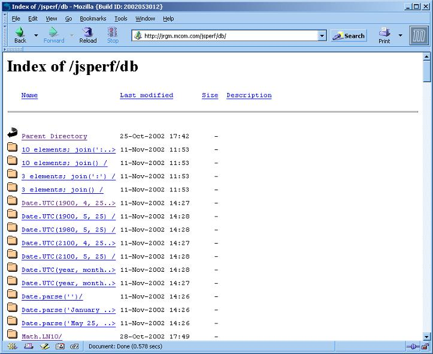

NAME
| jsPerformance.pl | [-hkt]
[-b BUGURL] [-c CLASSPATH] [-f OUTFILE] [-j JAVAPATH]
[-l TESTLIST ...] [-L NEGLIST ...] [-p TESTPATH] [-s SHELLPATH]
[-u LXRURL] [--help] [--confail] [--trace] [--classpath=CLASSPATH]
[--file=OUTFILE] [--javapath=JAVAPATH] [--list=TESTLIST]
[--neglist=TESTLIST] [--testpath=TESTPATH] [--shellpath=SHELLPATH]
[--lxrurl=LXRURL] {-e ENGINETYPE | --engine=ENGINETYPE}
|
perl jsPerformance.pl -e smopt Executes all tests against the optimized SpiderMonkey shell, writing the results to the default result file.
perl jsPerformance.pl -e smopt -f TEST.htmlExecutes all tests against the optimized SpiderMonkey shell, writing the results to the TEST.html file.
perl jsDriver.pl -e smopt -l tests/number
Executes all tests
in the tests/number folder against
the optimized Spider Monkey shell.
DESCRIPTION
RESULTS
The picure below is a screen shot of a database that lies on the server. After the tests are run, it creates folders based on the JavaScript method you are testing. 

TO DO
This test suite is not finished. The JavaScript files have not all been created to properly test the performance of JavaScript.
Currently the results are posted locally as a peer file to jsPerformance.pl, and to a server in directory-structure format. For example,
- 2002:10:25:17:49:20 4516 Math.PI 10.169.106.116 win2k-1.7ghz-256mb
libwww-perl/5.65
2002:10:28:18:09:30 4531 Math.PI 10.169.106.11 win2k-1.7ghz-256mb libwww-perl/5.65
in the "win2k-1.7ghz-256mb" file are the outputs shown:
and create another folder with:
- 2002:10:25:17:49:20 922 Math.abs(-180) 10.169.106.116 win2k-1.7ghz-256mb
libwww-perl/5.65
2002:10:28:18:09:30 953 Math.abs(-180) 10.169.106.116 win2k-1.7ghz-256mb libwww-perl/5.65
in the "win2k-1.7ghz-256mb" file are the outputs shown:
"Math.abs(-180)" and "Math.PI" may be replaced by "ABC" and "XYZ" which could be used as unique ID's that are assigned each time the test is run.
Everytime the test is run, it will generate a unique ID.
The advantage of this is that you can just search for the unquie ID ("XYZ"),
and it will parse through all the folders and files...and look for that unique ID, and it will print it out like the following:
URL: report.pl?id=XYZ
Math.PI win2k-1.7ghz-256mb 4531
Math.abs(-180) win2k-1.7ghz-256mb 922
We would like to extend our testing to the CScript shell of Microsoft. However, the CScript shell may not support the -f option of the SpiderMonkey shell. Our test driver opens a process such as:
D:/JS_TRUNK/mozilla/js/src/WINNT5.0_OPT.OBJ/js.exe -f ./tests/shell.js -f ./tests/boolean/valueOf-001.js
Notice the first -f loads a file containing utility reporting functions: ./tests/shell.js.
Only then is the testcase itself loaded: ./tests/boolean/valueOf-001.js.
If the CScript shell has no analogue of the -f option a workaround will have to be found.